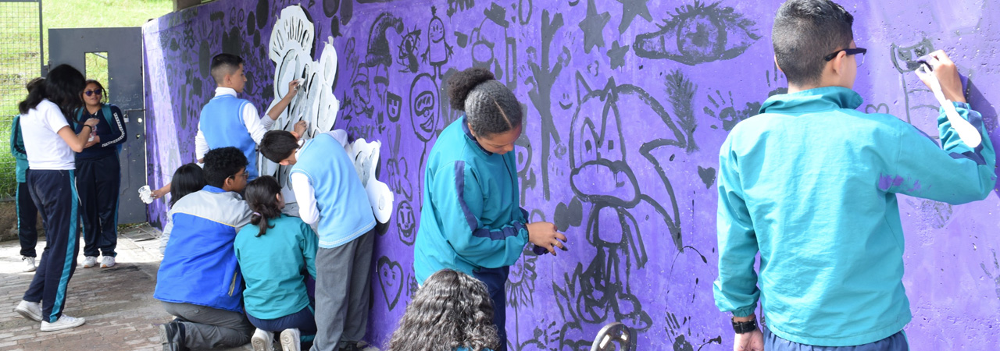
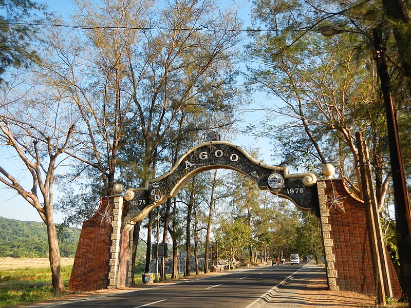
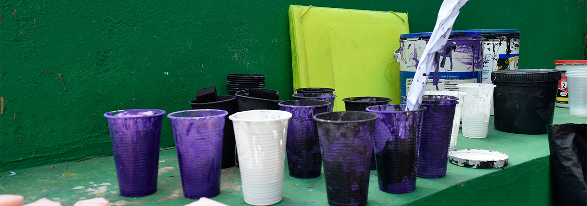
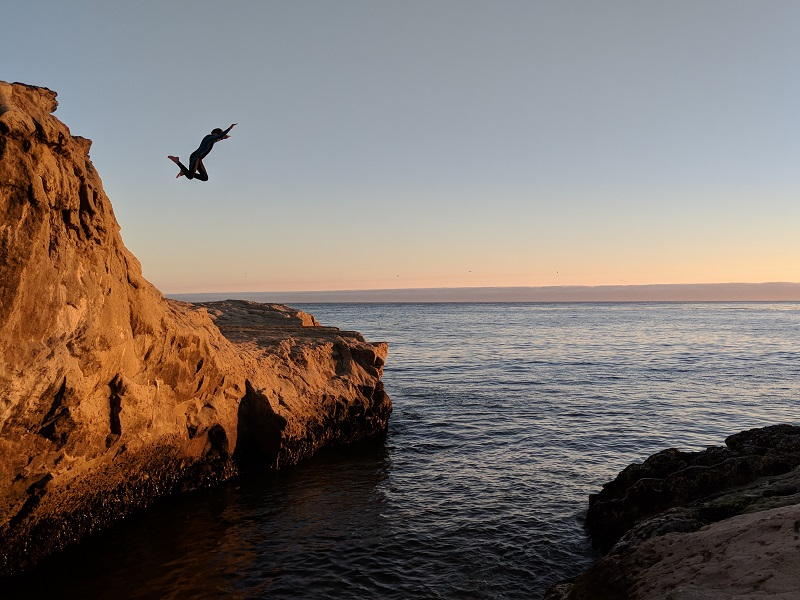
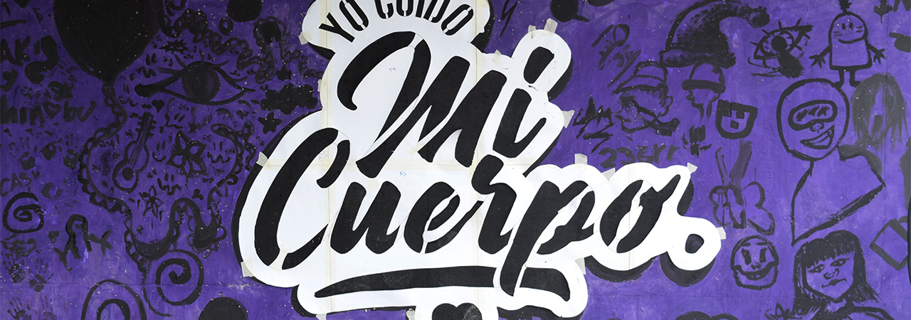
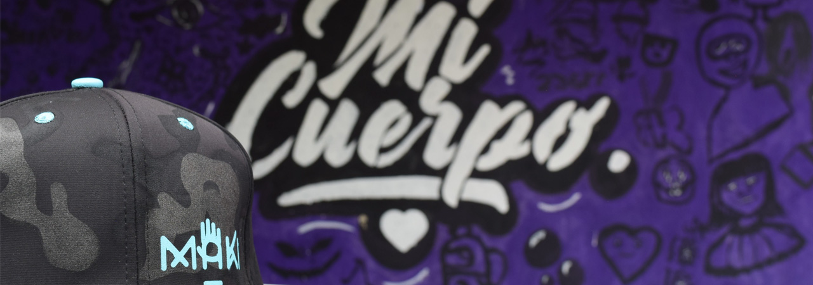
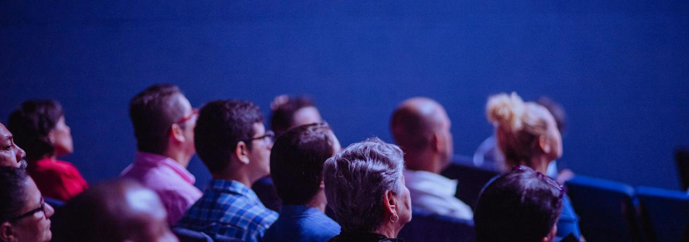
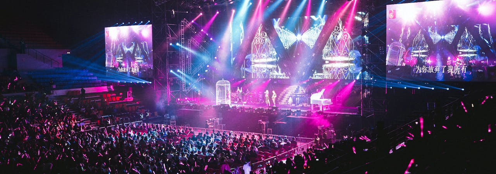

-  
-  
-


- 
LA FUNDACIÓN MAKI, busca ser una organización que permita el cambio en las realidades de las familias en sectores vulnerables y en crecimiento desde la enseñanza de los conocimientos artísticos, estéticos y culturales para posibilitar emprendimientos de nuestra población.
nuestro equipo
JUAN VILLARREAL
Estudiante de Diseño Gráfico, con más de 6 años de experiencia en elaborar piezas audiovisuales desde un componente social y empresarial.
ALEX TACHACK
Diseñador gráfico de profesión y artista por vocación. con experiencia de 10 años en organización de procesos y estandarización de actividades del diseño gráfico, gestor de campañas publicitarias y creador de material gráfico para campañas publicitarias en diferentes sectores comerciales.
SERGIO PEREZ
Lic. En Ciencias Sociales con más de 3 años de experiencia en procesos sociales, procesos educativos y actos pedagógicos, tanto en voluntariados, como actividades en fundaciones y empresas privadas.
PAULA ABRIL
Tecnóloga en contabilidad y finanzas del Sena y profesional en administración de empresas de la universidad central de Colombia, con experiencia de 10 años en procesos organizacionales, manejos básicos contables, compras, inventarios, manejo de personal, manejo financiero, gestión de ventas y aplicaciones básicas de marketing digital.
JAIRO TACHACK
Ingeniero Industrial, con experiencia de 5 años en organización y estandarización de procesos industriales, control, rotaciones, reducción en niveles y mermas de inventarios, actualmente con Cargo de coordinador de Planeación y logística en empresa del sector industrial de los empaques.
NIVIA ABRIL
Técnica en educación preescolar de profesión y artista por vocación, con 30 años de experiencia en actividades artísticas como encolados, costura, y decoración.
nosotros
objetivos
LA FUNDACIÓN MAKI, busca ser una organización que permita el cambio en las realidades de las familias en las diferentes clases sociales y en el crecimiento desde la enseñanza de los conocimientos artísticos, estéticos y culturales para posibilitar emprendimientos de nuestra población. Para ello queremos desde una landing page posicionar la marca y que las personas que quieran adquirir nuestros servicios tengan una mejor experiencia para.
misión
Somos una organización con amplio conocimiento en las artes y oficios, apasionados por la cultura y el desarrollo del ser humano, para generar cambios en las realidades de las familias en sectores vulnerables y en crecimiento, por ello, la LA FUNDACIÓN MAKI, brindará estrategias prácticas para transformar las condiciones de vida de las personas por medio de estrategias de intervención en las comunidades empleando las artes y oficios
visión
Para el 2027, la LA FUNDACIÓN MAKI se posicionará como una organización referente en el apoyo de familias vulnerables y en crecimiento del país, transformando los contextos sociales de nuestra población, a través, de técnicas artísticas y de oficios para así multiplicar los conocimientos de la cultura, la estética y el emprendimiento
eventos
- 
-
